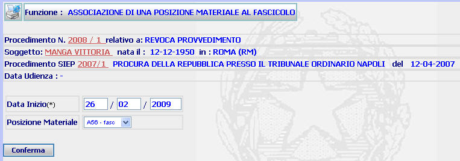
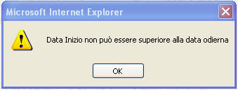
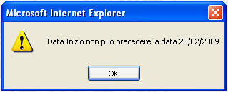

ASSOCIAZIONE DI UNA POSIZIONE MATERIALE AL FASCICOLO: La funzione consente di associare una posizione materiale (inserita in una lista predefinita attraverso la funzione inserimento posizione materiale) ad fascicolo Sius.
LE MASCHERE VIDEO
La funzione viene realizzata attraverso la maschera seguente in cui compaiono gli estremi del procedimento Sius, il nome del soggetto, gli estremi del procedimento Siep e l'eventuale data di udienza, nonchè una serie di campi dove poter inserire la data di inizio ed il tipo di posizione materiale associata.

COME FARE PER ...
| Per visualizzare il dettaglio del procedimento Sius l'utente deve cliccare sul link relativo all'Anno/Numero del procedimento Sius evidenziato in rosso; |

| Per visualizzare il dettaglio del soggetto l'utente deve cliccare sul link relativo al cognome/nome del soggetto evidenziato in rosso; |

| Per visualizzare il dettaglio del procedimento Siep l'utente deve cliccare sul link relativo all' Anno/Numero del procedimento Siep evidenziato in rosso; |

|
Per
associare una posizione materiale ad
un fascicolo Sius, l'utente deve
compilare i campi presenti nella maschera e cliccare il bottone
|
CAMPI
I campi da compilare sono i seguenti:
| Data Inizio | Campo (obbligatorio) nel quale va inserito la data in cui si associa la posizione materiale al fascicolo Sius |
| Posizione Materiale | Campo (obbligatorio) nel quale va inserito mediante l'apposita tendina il tipo di posizione materiale (inserita in una lista predefinita attraverso la funzione inserimento posizione materiale) da associare al fascicolo |
PULSANTI
E' presente il pulsante
 facente parte del gruppo di
pulsanti di "Uso Comune"
facente parte del gruppo di
pulsanti di "Uso Comune"
BOTTONI
Oltre ai comandi funzionali relativi al menù verticale è presente il seguente bottone:
|
COMANDI |
DESCRIZIONE |
|
|
A fronte di tale comando, il sistema dopo aver verificato la validità dei dati specificati, presenta la maschera di posizioni materiali associate al fascicolo. |
CONTROLLI
Il sistema effettua i seguenti controlli:
| verifica che la data di inizio sia pari od inferiore alla data di sistema, fornendo in caso contrario il seguente messaggio |

|
verifica che, nel caso di associazione di una posizione materiale ad un fascicolo che ne abbia avute assegnate altre, la data inizio non sia superiore a quella di inizio delle precedenti posizioni, fornendo in caso contrario il seguente messaggio |
